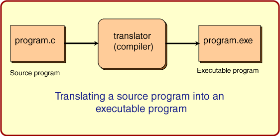

Program Translation
Here is a picture that shows what usually happens with programs
written in "C" (Java is different; it will be discussed in the next chapter.)

Here is a review of what goes on:
- The source file is created using a text editor.
- It contains instructions in a high level language.
- It contains bytes that hold characters.
- The source file is kept on the hard disk.
- The source file can not be run by the processor.
- A translator (compiler) program can translate the source file into an executable file.
- The source file remains unchanged; a new executable file is created.
- A translator is used for programs written in
a specific high level language (like "C") and
a specific processor type (like "Pentium"),
and only runs under a specific operating system (like "Windows".)
- The executable file is also kept on hard disk.
- To run the program, the operating system is told to copy the executable file
into main memory and to start it running.
The above is what goes on with most languages: Ada, Pascal, C, C++, FORTRAN and others.
Java adds a few more steps,
which will be discussed in the next chapter.